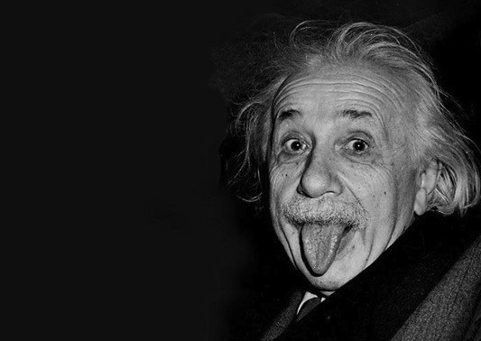

Curtis hsiao
The are about gravitation. He figured out that the space can be changed, when we put the things that it has any mass, it will be changed following the mass.
He used infinitesimal and matrix to be bastic, and calculating the formula for gravity.
He used math to figure out that Newton is wrong, because Newton said that gravity will be same and the height and distance will be stable.
They are about the time that they believe the time is made by lots of elements.
However,we haven't got any true things to proof the things, as he only used math for figuring out the furmula.
He concentrated at quantum mechanics and believe that there is a space for time cosisting

He is a genius on math, he could remeber all the numbershe looked before.
If the theory be proofed, and maybe we could invent time machine. To be specific, the time machine in Doreamon.
We need to concentrate at the other line(space) that owned by time so that we could did something on that.

We can only use calculate the time, because the time has no mass that we couldn't notice it and also look at it.